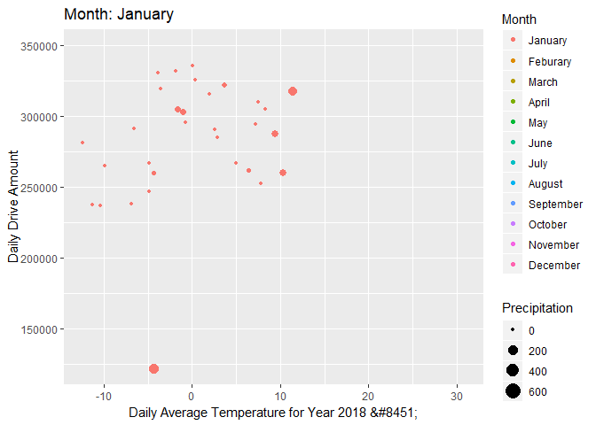

Previous work has shown that there are relationships between taxi ridership and weather events.“During adverse weather, taxi drivers tend to make more money” (Kamga et al., 2013). Kamga et al. also found that during days when adverse weather took place, there was a higher demand for taxis in Manhattan compared to the other boroughs, and that more people were prone to take shorter taxi trips.
In this part, we want to see whether there is a trend between weather and yellow cab within and between months use using our data. We use the weather data including temperature and precipitation data in 2018 and their corresponding yellow taxi use data. For temperature, we use average temperature average_temp as the mean of maximum temperarure and miniminum temperature in each day. For yellow cab data, we use the raw data for 2018 from NYC Taxi Website, count the daily taxi usage by pick_up_data and then join the weather dataset by month and date.
weather_tot=read_csv(file = "./data/weather_nyc_2018.csv")%>%
mutate(date = as.character(date)) %>%
separate(date, into = c("year","month","pu_date"), sep = "-", convert = TRUE)%>%
mutate(
average_temp=(tmin+tmax)/2)## Parsed with column specification:
## cols(
## name = col_character(),
## id = col_character(),
## date = col_date(format = ""),
## prcp = col_double(),
## tmax = col_double(),
## tmin = col_double()
## )yellowcab=read_csv(file = "./data/yearly_summary/2018_taxi_trip_daily_summary.csv")%>%
mutate(date = as.character(vars),
daily_drive=n) %>%
separate(date, into = c("year","month","pu_date"), sep = "-", convert = TRUE)%>%
select(-vars,-year)## Warning: Missing column names filled in: 'X1' [1]## Parsed with column specification:
## cols(
## X1 = col_double(),
## vars = col_date(format = ""),
## n = col_double()
## )cab_weather=
left_join(weather_tot,yellowcab, by=c("month","pu_date"))%>%
select(month, pu_date,average_temp, daily_drive,prcp)%>%
mutate(month=as.factor(month),
month=recode_factor(month, '1'="January", '2'="Feburary",'3'="March",'4'='April','5'='May','6'='June','7'='July','8'='August','9'='September','10'='October','11'='November','12'='December'))Here we make an animation plot to show the daily drive amount and average daily temperature for each month.The size of the dots shows the precipitaiton for that day which help to identify whether rainy weather also increase taxi use.
Although we hypothesis that cold weather and hot weather might have more taxi use, there is no obvious usage increase in summer time. While, we do observed high daily drive amount in Feburary, March, April which are the four coldest month in NYC. Also,no interaction between month and average temperature being observed. In terms of the influence of precipitation, we didn’t observe a significant pattern. Contrast to what we guess before, instead of increase daily drive amount, rainy days had lower drive amount. This might due to the reason that people would just stay at home during days with heavy rain or snow. Also, if we adjust for distance, there might be a significant association between precipitation and short distance drive.
weather_plot=cab_weather %>%
ggplot(aes(x=average_temp, y=daily_drive, frame_vars(month)))+
geom_point(aes(size=prcp,colour = month))+
labs(title = 'Month: {closest_state}',
x = 'Daily Average Temperature for Year 2018 ℃',
y = 'Daily Drive Amount',
colour = 'Month',
size='Precipitation'
) +
transition_states(month,2,1)+
enter_appear()+
exit_fade()
animate(weather_plot, duration=12)